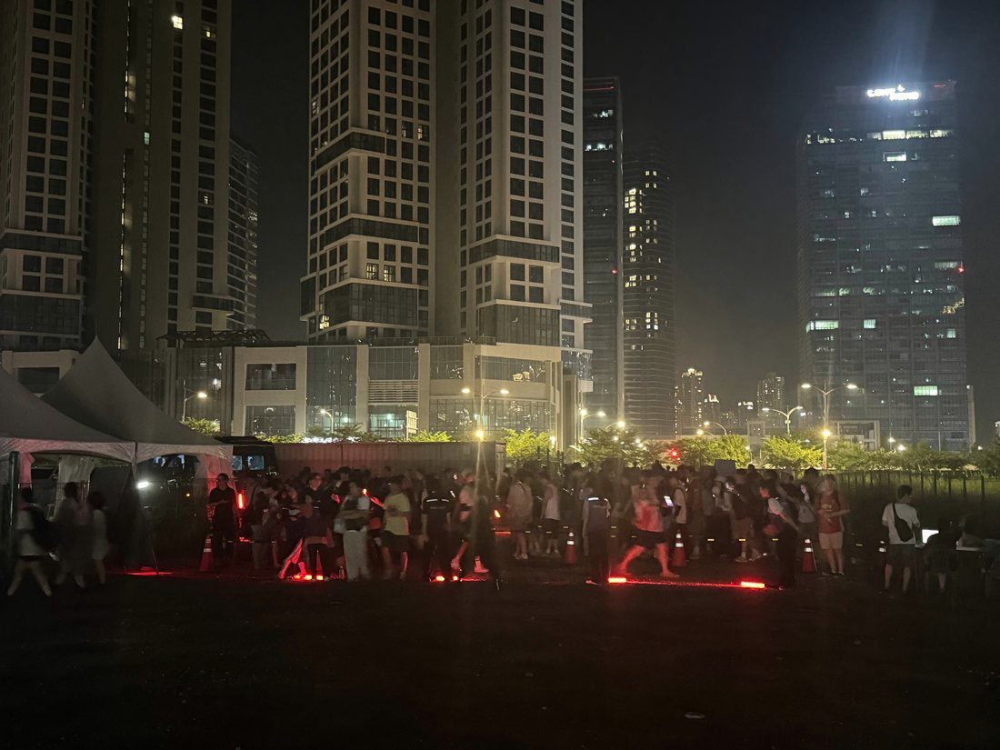
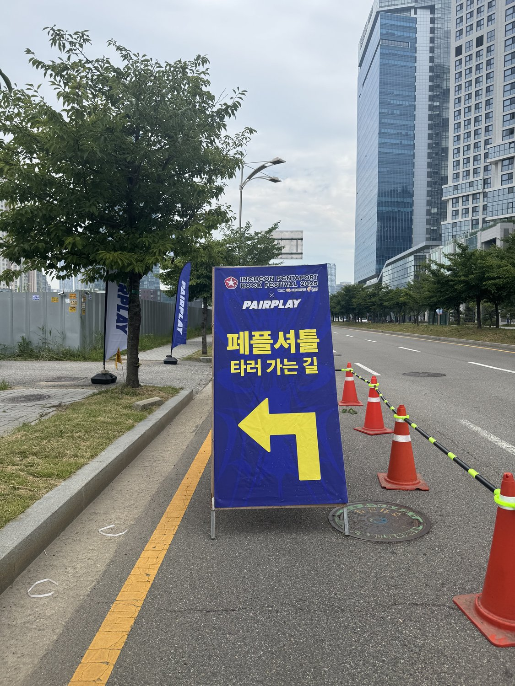
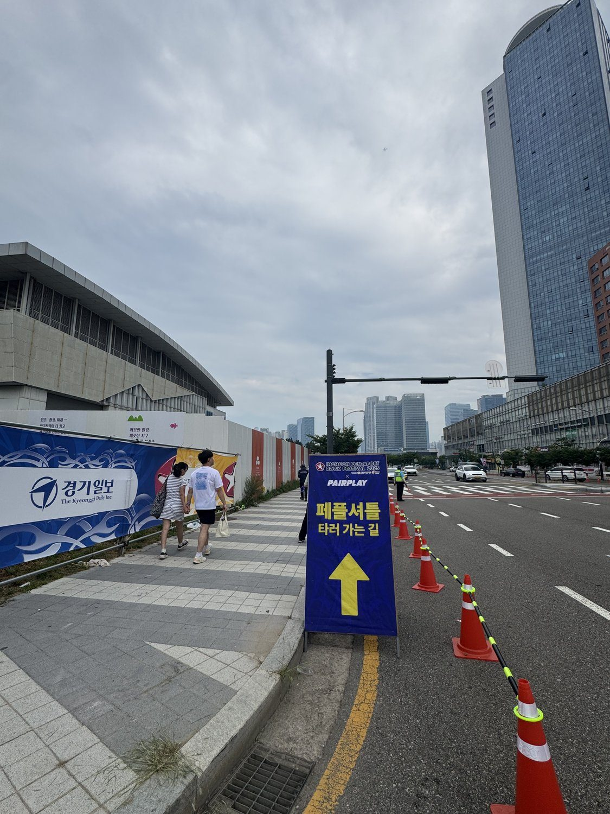
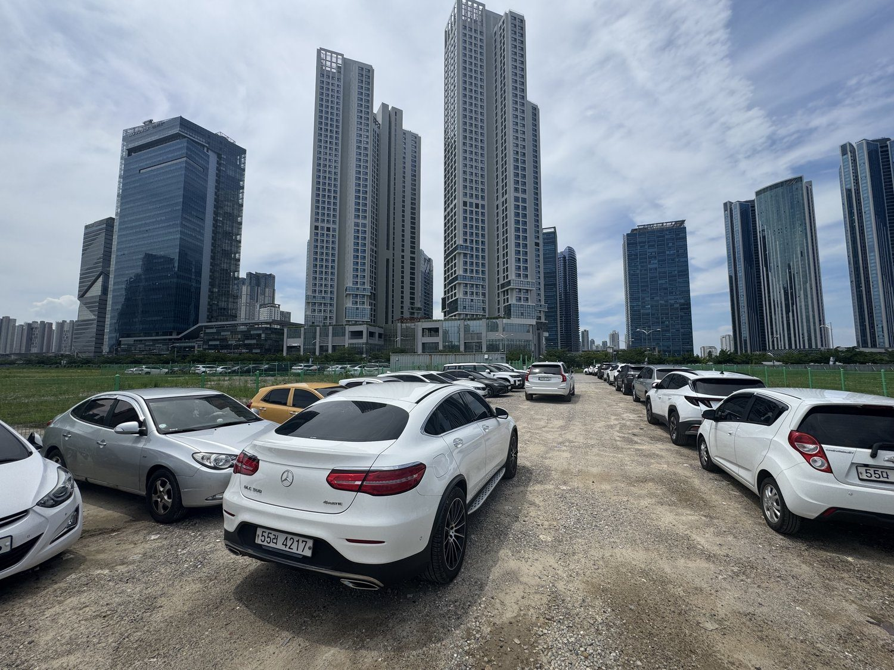

// 개요
국내 최대 음악 축제 펜타포트 락 페스티벌의 유료 셔틀 경험을 설계·운영했습니다. 3일간 대형버스 340+대, 1만 1천여 명, 13개 노선 38개 행선지 규모. 전년도 타사의 3시간 탑승 지연으로 다량의 민원이 발생한 상황에서, '정시 출발·높은 고객 만족'을 목표로 비상근무 체제로 임해 첫차 새벽 5시부터 귀가행 다음날 정오까지 모든 차량을 행선지에 정확히 도착시켰습니다.
목표 & 핵심 지표
내부 목표
프로젝트 매출·이익 달성
외부 목표
전년도 타사의 3시간 지연 사태 재발 방지, 민원 0건
핵심 지표정시 출발률 · 민원 0회 · 탑승객 만족도 72.6% · 목표 매출 대비 113% · 이익률 25%
// 실행
수행 업무
- 승객 탑승 운영 약 1.1만 명 · 전국 340+대 차량 배차 관리
- 현장 단기 스태프 약 70명 교육·관리(온라인·현장 2회차), 일자·노선별 판매 예측 분석
- 탑승·검표 프로세스 간소화로 병목 구간 해소, 장소·상황별 상세 계획 수립
- 프로젝트 매출·비용 관리 — 목표 대비 113% 달성, 전사 최대 매출·이익 달성
- 운수사·주최 및 주관사·개발팀 등 내외부 커뮤니케이션 총괄
협업 방식
- 운수사전국 340+대 배차·운행 스케줄 조율
- 주최 측현장 동선·운영 협의
- 개발팀예매·탑승 관리 시스템 연동
- 현장 스탭약 70명 교육·현장 운영 관리
담당 범위총괄 PM — 판매 예측 분석·매출/비용 관리·내외부 커뮤니케이션기여도 100%
// 성과
72.6%
고객 만족도(긍정)
0회
민원 (전년 10회)
1.3억
최대 매출 · 이익률 25%
+2건
신규 프로젝트 추가 수주
// 회고
본 무대에서 셔틀 승차장까지 도보 10분 거리였는데, 예산 절감을 위해 A보드 수량을 줄이고 온라인 안내 비중을 높인 결과 일부 탑승객에게 동선 혼선이 발생했습니다. 오프라인 안내물은 비용이 아니라 경험의 일부라고 판단해, 다음 회차에는 A보드를 충분히 확보하는 것이 필요하다고 봤습니다. 또한 이 프로젝트를 이익 중심이 아니라 바이럴 관점으로 접근했다면, 브랜드 협업으로 탑승객에게 얼음물·쿨링 서비스를 제공하는 식으로 셔틀 자체를 브랜드 경험 접점으로 만들 수 있었을 것입니다. 이후 프로젝트에서는 착수 시점에 정량 목표를 먼저 합의하는 것을 원칙으로 삼고 있습니다.
// 결과물



